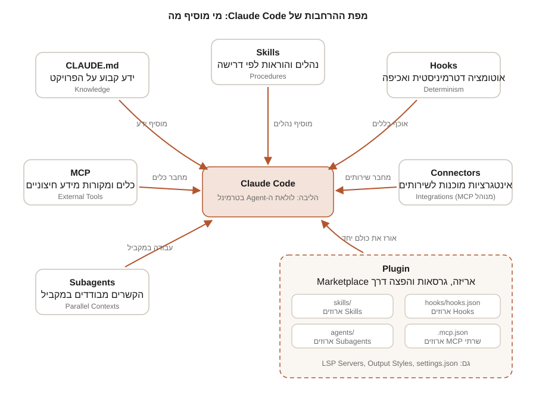

חלק ה | פרק 26
Plugins
בפרקים הקודמים בניתם Skills, Hooks, Subagents וחיבורי MCP, כל אחד בנפרד. Plugin הוא מנגנון האריזה שמאגד את כולם ליחידה אחת עם שם, גרסה ומנגנון הפצה: התקנה בפקודה אחת, עדכונים מסודרים, ושיתוף עם צוות או קהילה דרך Marketplace. בפרק הזה נלמד את מבנה ה-Plugin על כל רכיביו, את ה-Manifest, את מסלולי ההתקנה והפיתוח, את עולם ה-Marketplaces, ניהול גרסאות וממשל צוותי, ונפרק לגורמים את taskflow-toolkit: ה-Plugin המלא שמצורף לחבילת המדריך.
לפרק יש לומדה משלימה על סוג Plugin חדש: בונים Mods ב-Claude Code, עם Mod שנבדק בפועל ב-Claude Code 2.1.301, סימולטור של Hook ששומר על פקודות Bash, בודק אירועים ותוכנית אבטחה (16.10.2026).
מה זה Plugin ואיזו בעיה הוא פותר
Plugin הוא תיקייה עצמאית של רכיבי הרחבה: Skills, Agents, Hooks, שרתי MCP ועוד, לצד קובץ Manifest אופציונלי בשם plugin.json. עד עכשיו, כשרציתם לשתף עמית ב-Skill מוצלח, הייתם מעתיקים קבצים ידנית ל-.claude/ שלו, ובכל שיפור חוזרים על התהליך. Plugin פותר בדיוק את זה: ההרחבות מקבלות זהות (שם), מחזור חיים (גרסה ועדכונים) וערוץ הפצה (Marketplace).
ההשוואה הרשמית בין שתי הדרכים:
| גישה | שם ה-Skill | מתאים ל... |
|---|---|---|
Standalone (תיקיית .claude/) | /hello | תהליכי עבודה אישיים, התאמות לפרויקט בודד, ניסויים מהירים |
| Plugin (תיקייה עצמאית, אפשר עם Manifest) | /plugin-name:hello | שיתוף עם צוות, הפצה לקהילה, גרסאות מסודרות, שימוש חוזר בין פרויקטים |
ההמלצה המתועדת: התחילו ב-Standalone לאיטרציה מהירה, והמירו ל-Plugin כשמגיע הזמן לשתף. שימו לב להשלכת מיסוד השם: רכיבי Plugin תמיד ממוספרים במרחב שמות (Namespace) של ה-Plugin, כדי למנוע התנגשויות בין Plugins שונים עם Skills באותו שם.

מתי להשתמש, מתי לא, ואיך זה עובד מושגית
השתמשו ב-Plugin כאשר: אתם רוצים לשתף פונקציונליות עם צוות או קהילה; אתם צריכים את אותם Skills ו-Agents בכמה פרויקטים; אתם רוצים ניהול גרסאות ועדכונים מסודר; או שאתם מפיצים דרך Marketplace. הישארו ב-Standalone כאשר: ההתאמה היא לפרויקט בודד; התצורה אישית ולא צריכה שיתוף; אתם עדיין מתנסים; או שחשוב לכם שם קצר בלי Namespace (כמו /deploy במקום /my-plugin:deploy).
מושגית, חיי Plugin מותקן נראים כך: אתם רושמים Marketplace (קטלוג), בוחרים ממנו Plugin, ו-Claude Code מעתיק את תיקיית ה-Plugin ל-Cache מקומי בנתיב ~/.claude/plugins/cache, משיקולי אבטחה ואימות. ההפעלה נרשמת כערך plugin-name@marketplace-name תחת המפתח enabledPlugins בקובץ ההגדרות של ה-Scope שבחרתם. בפתיחת Session, Claude Code טוען את הרכיבים של כל ה-Plugins הפעילים: תיאורי Skills ו-Agents נכנסים ל-Context, שרתי MCP ו-LSP עולים, ו-Hooks נרשמים לאירועים. שתי השלכות מעשיות של ההעתקה ל-Cache: אסור להפנות לקבצים מחוץ לתיקיית ה-Plugin (הם פשוט לא מועתקים), וכל עדכון גרסה מקבל תיקייה חדשה, כשהישנה נשמרת עוד כשבועיים לטובת Sessions פתוחים ואז נמחקת (כלי החיפוש של Claude מדלגים על תיקיות כאלה).
הפרק מניח היכרות עם Skills (פרק 21), Hooks (פרק 22), MCP (פרק 23) ו-Subagents (פרק 25), ועם קובצי ההגדרות וה-Scopes מ-פרק 6. אם הפקודה /plugin לא מופיעה אצלכם, עדכנו את Claude Code לגרסה עדכנית.
מבנה Plugin: כל הרכיבים
נכון למועד המחקר (28.07.2026, גרסה 2.1.220), אלה הרכיבים המתועדים ומיקומם. כלל הברזל: רק plugin.json יושב בתוך .claude-plugin/; כל שאר התיקיות בשורש ה-Plugin.
| רכיב | מיקום ברירת מחדל | מה הוא מוסיף | סטטוס |
|---|---|---|---|
| Manifest | .claude-plugin/plugin.json | מטא-נתונים ותצורה (אופציונלי) | Stable |
| Skills | skills/<name>/SKILL.md | נהלים והוראות; מופעלים כ-/plugin:skill או אוטומטית | Stable |
| Commands | commands/*.md | Skills כקובצי Markdown שטוחים; פורמט ישן, העדיפו skills/ | Legacy |
| Agents | agents/*.md | Subagents; מופיעים בשם plugin:agent | Stable |
| Hooks | hooks/hooks.json | מטפלי אירועים (פרק 22) | Stable |
| MCP Servers | .mcp.json | שרתי MCP שעולים אוטומטית כשה-Plugin פעיל | Stable |
| LSP Servers | .lsp.json | אינטליגנציית קוד: דיאגנוסטיקה מיידית וניווט (Go to Definition) | Stable |
| Workflows | workflows/ | סקריפטי Workflow | Stable |
| Output Styles | output-styles/*.md | סגנונות תגובה | Stable |
| Executables | bin/ | קבצי הרצה שנוספים ל-PATH של הכלי Bash כשה-Plugin פעיל | Stable |
| Settings | settings.json | הגדרות ברירת מחדל; כרגע נתמכים רק המפתחות agent ו-subagentStatusLine | Stable |
| Monitors | monitors/monitors.json | תהליכי מעקב ברקע שמזרימים התראות ל-Claude | Experimental |
| Themes | themes/*.json | ערכות צבע שמופיעות ב-/theme | Experimental |
אל תשימו את skills/, agents/, hooks/ או commands/ בתוך .claude-plugin/. שם יושב רק ה-Manifest. שורש ה-Plugin הוא התיקייה שמכילה את .claude-plugin/, לא ~/.claude/. וקובץ CLAUDE.md בשורש Plugin לא נטען כהקשר; הוראות שצריכות להיטען עוברות דרך Skill.
שני פרטים חשובים מהתיעוד: Plugin שמספק בדיוק Skill אחד יכול לשים SKILL.md ישירות בשורש (שדה ה-name ב-Frontmatter קובע את שם ההפעלה), ו-Agents של Plugin לא תומכים ב-hooks, mcpServers ו-permissionMode ב-Frontmatter, משיקולי אבטחה.
כמה מילים על הרכיבים הפחות מוכרים. LSP Servers: קובץ .lsp.json ממפה שרת שפה (למשל gopls ל-Go) לסיומות קבצים, ומעניק ל-Claude דיאגנוסטיקה מיידית אחרי כל עריכה וניווט קוד מדויק; את הבינארי של שרת השפה מתקינים בנפרד, וה-Plugin רק מגדיר את החיבור. לשפות הנפוצות עדיף להתקין את ה-Plugins המוכנים מהקטלוג הרשמי. Monitors: Experimental תהליכי רקע (למשל tail -F על לוג שגיאות) שכל שורת פלט שלהם מגיעה ל-Claude כהתראה; הם רצים רק ב-Sessions אינטראקטיביים, באותה רמת אמון כמו Hooks, והשבתת ה-Plugin באמצע Session לא עוצרת Monitor שכבר רץ. bin/: קבצי הרצה שנוספים ל-PATH של הכלי Bash כל עוד ה-Plugin פעיל, כך ש-Claude יכול לקרוא להם בשמם. settings.json: מאפשר ל-Plugin להחליף את התנהגות ברירת המחדל, למשל {"agent": "security-reviewer"} שמפעיל את אחד ה-Agents של ה-Plugin בתור ה-Thread הראשי.
ה-Manifest: plugin.json
ה-Manifest אופציונלי: בלעדיו, Claude Code מגלה רכיבים במיקומי ברירת המחדל וגוזר את השם משם התיקייה. כשיש Manifest, השדה היחיד שחובה הוא name (kebab-case, בלי רווחים), שמשמש גם כ-Namespace. סכמה מלאה:
{
"name": "plugin-name",
"displayName": "Plugin Name",
"version": "1.2.0",
"description": "Brief plugin description",
"author": { "name": "Author Name", "email": "author@example.com" },
"homepage": "https://docs.example.com/plugin",
"repository": "https://github.com/author/plugin",
"license": "MIT",
"keywords": ["keyword1", "keyword2"],
"defaultEnabled": true,
"skills": "./custom/skills/",
"commands": ["./custom/commands/special.md"],
"agents": ["./custom/agents/reviewer.md"],
"hooks": "./config/hooks.json",
"mcpServers": "./mcp-config.json",
"lspServers": "./.lsp.json",
"outputStyles": "./styles/",
"userConfig": { },
"dependencies": [ { "name": "secrets-vault", "version": "~2.1.0" } ]
}הסבר השדות המרכזיים: version אופציונלי אך קריטי להבנה: אם הגדרתם אותו, משתמשים מקבלים עדכון רק כשאתם מעלים אותו; אם השמטתם וה-Plugin מופץ דרך Git, כל Commit נחשב גרסה חדשה (ה-SHA הוא הגרסה). displayName הוא שם תצוגה בלבד. defaultEnabled: false מתקין את ה-Plugin כבוי עד שהמשתמש מפעיל. שדות הנתיבים (skills, agents, hooks...) דורסים או מרחיבים את מיקומי ברירת המחדל (חייבים להתחיל ב-./); skills יוצא דופן ומתווסף לסריקת skills/ במקום להחליפה. userConfig מגדיר ערכים שהמשתמש מתבקש להזין בהפעלה (כולל שדות sensitive שנשמרים ב-Keychain), ו-dependencies מצהיר על Plugins אחרים שנדרשים. שדות לא מוכרים לא מפילים את הטעינה, אך claude plugin validate מציג עליהם אזהרות (ועם --strict גם נכשל, שימושי ב-CI).
שלושה משתני נתיב זמינים בכל תצורת Plugin: ${CLAUDE_PLUGIN_ROOT} (תיקיית ההתקנה של ה-Plugin; משתנה בכל עדכון), ${CLAUDE_PLUGIN_DATA} (תיקיית נתונים מתמדת ששורדת עדכונים, למשל ל-node_modules), ו-${CLAUDE_PROJECT_DIR} (שורש הפרויקט). ב-Hooks ושרתים של Plugin חובה להשתמש ב-${CLAUDE_PLUGIN_ROOT}, כי Plugins שמותקנים מ-Marketplace מועתקים ל-Cache מקומי (~/.claude/plugins/cache) ולא רצים מהמקור, ולכן גם אי אפשר להפנות לקבצים מחוץ לתיקיית ה-Plugin.
userConfig: תצורה אישית בלי לערוך JSON
כש-Plugin צריך ערכים מהמשתמש (כתובת שרת, Token), אל תשלחו אנשים לערוך settings.json ידנית. הצהירו על השדות ב-userConfig, ו-Claude Code יציג טופס בזמן ההפעלה:
{
"userConfig": {
"api_endpoint": {
"type": "string",
"title": "API endpoint",
"description": "Your team's API endpoint",
"required": true
},
"api_token": {
"type": "string",
"title": "API token",
"description": "API authentication token",
"sensitive": true
}
}
}סוגי השדות: string, number, boolean, directory, file, עם default, required ו-multiple. ערכים מסומנים sensitive מוסתרים בהקלדה ונשמרים באחסון מאובטח (Keychain ב-macOS) במקום בקובץ ההגדרות. הערכים זמינים להחלפה כ-${user_config.KEY} בתצורות MCP ו-LSP, ומיוצאים לתהליכי Hooks כמשתני סביבה CLAUDE_PLUGIN_OPTION_<KEY>. הגבלת אבטחה חשובה (מגרסה 2.1.207): פקודות שרצות דרך Shell (Hook בצורת Shell, Monitors) לא יכולות להשתמש ב-${user_config.*} ישירות, כדי שערך מוזרק לא יריץ קוד; קראו את הערך ממשתנה הסביבה במקום.
Namespacing: איך קוראים לרכיבים
- Skill בשם
helloב-Plugin בשםmy-pluginמופעל כ-/my-plugin:hello. - Agent בשם
reviewerמופיע ב-@-mention כ-my-plugin:reviewer. - כלי של שרת MCP מצורף ממוען ב-Hooks וב-Permissions כ-
mcp__plugin_my-plugin_server__tool.
כך שני Plugins עם Skill בשם deploy חיים זה לצד זה. שינוי ה-Namespace נעשה דרך שדה ה-name ב-Manifest, אבל זכרו: שינוי שם שובר התקנות קיימות (ראו renames בהמשך).
התקנה והפעלה: שלושה מסלולים
מסלול 1: ממשק /plugin
הפקודה /plugin פותחת מנהל Plugins עם ארבע לשוניות (מעבר עם Tab): Discover (עיון בכל ה-Marketplaces שהוספתם), Installed (ניהול, השבתה, הסרה), Marketplaces (הוספה, עדכון, הסרה), ו-Errors (שגיאות טעינה). בחירת Plugin מציגה את פרטיו לפני ההתקנה: עלות ה-Context המשוערת ב-Tokens, תאריך עדכון אחרון, ורשימת "Will install" של כל הרכיבים שיתווספו. ההתקנה מסתיימת בבחירת Scope:
| Scope | קובץ ההגדרות | למי |
|---|---|---|
user | ~/.claude/settings.json | לכם, בכל הפרויקטים (ברירת מחדל) |
project | .claude/settings.json | לכל מי שמשכפל את ה-Repository |
local | .claude/settings.local.json | לכם, בפרויקט הזה בלבד |
managed | Managed Settings | מותקן על ידי Admin, לקריאה בלבד |
מסלול 2: פקודות ישירות
לכל הפקודות יש מקבילת /plugin ... בתוך Session אינטראקטיבי. פקודות עזר נוספות: claude plugin validate <path> (בדיקת Manifest, Frontmatter ו-hooks.json; הריצו לפני כל פרסום), claude plugin init <name> (פיגום Plugin חדש בתיקיית ה-Skills, עם --with skills agents hooks mcp lsp לרכיבי התחלה), claude plugin tag (תיוג גרסה ב-Git) ו-claude plugin prune (ניקוי תלויות יתומות). אחרי שינוי מצב Plugins באמצע Session, הריצו /reload-plugins כדי להחיל בלי הפעלה מחדש.
מסלול 3: מצב פיתוח עם --plugin-dir
בזמן פיתוח, טוענים Plugin ישירות מהדיסק בלי התקנה:
כש-Plugin שנטען עם --plugin-dir חולק שם עם Plugin מותקן, העותק המקומי גובר לאותו Session, וזה מאפשר לבדוק שינויים בלי להסיר את המותקן. בזמן פיתוח, /reload-plugins קולט שינויים ברוב הרכיבים בלי הפעלה מחדש. מסלול רביעי, קל משקל: כל תיקייה תחת ~/.claude/skills/ (או .claude/skills/ של הפרויקט, אחרי אישור Trust) שמכילה .claude-plugin/plugin.json נטענת אוטומטית כ-Plugin בשם <name>@skills-dir, בלי Marketplace ובלי התקנה.
Marketplaces: הפצה
Marketplace הוא קטלוג: קובץ .claude-plugin/marketplace.json ב-Repository שמונה Plugins והיכן להשיגם. הוספת Marketplace רק רושמת את הקטלוג; ההתקנה של כל Plugin היא צעד נפרד ומפורש.
{
"name": "company-tools",
"owner": { "name": "DevTools Team", "email": "devtools@example.com" },
"plugins": [
{
"name": "taskflow-toolkit",
"source": "./plugins/taskflow-toolkit",
"description": "TaskFlow team toolkit",
"version": "1.0.0"
},
{
"name": "deployment-tools",
"source": { "source": "github", "repo": "company/deploy-plugin", "ref": "v2.0.0" },
"description": "Deployment automation tools"
}
]
}שדות החובה: name (מזהה ה-Marketplace; שמות רשמיים של Anthropic שמורים וחסומים לחיקוי), owner, ו-plugins. שדה ה-source של כל רשומה תומך בחמש צורות: נתיב יחסי בתוך ה-Repository של ה-Marketplace (חייב להתחיל ב-./), github (עם repo, ואופציונלית ref ו-sha לנעילה), url (כל Git URL), git-subdir (תת-תיקייה ב-Monorepo, עם Clone חסכוני), ו-npm (חבילת npm, גם מ-Registry פרטי). רשומת Plugin יכולה לכלול גם strict: false, שהופך את רשומת ה-Marketplace להגדרה המלאה של ה-Plugin במקום plugin.json.
ה-Marketplaces הרשמיים של Anthropic
claude-plugins-official: הקטלוג האוצר של Anthropic, נרשם אוטומטית בהפעלה האינטראקטיבית הראשונה. כולל בין השאר Plugins של אינטליגנציית קוד (typescript-lsp,pyright-lsp,rust-analyzer-lspועוד), אינטגרציות MCP מוכנות (github,gitlab,atlassian,linear,figma,slack,sentryועוד), סקירת אבטחה אוטומטית (security-guidance), וכלי Workflow (commit-commands,pr-review-toolkit,plugin-dev). התקנה:/plugin install github@claude-plugins-official. הקטלוג גם זמין לעיון ב-claude.com/plugins.claude-community: קטלוג הקהילה, שאליו מגיעות הגשות צד שלישי אחרי סינון בטיחות אוטומטי; כל Plugin נעול ל-SHA. מוסיפים ידנית:/plugin marketplace add anthropics/claude-plugins-community.claude-code-plugins: קטלוג הדגמה ב-Repository של Claude Code עצמו:/plugin marketplace add anthropics/claude-code.
הגשת Plugin לקטלוג הקהילה
רוצים שה-Plugin שלכם יהיה זמין לכולם? מסלול ההגשה המתועד: מריצים claude plugin validate מקומית, ואז מגישים דרך אחד הטפסים: ב-claude.ai (דורש ארגון Team או Enterprise עם הרשאות ניהול Directory) או ב-Console בכתובת platform.claude.com/plugins/submit (פתוח ליוצרים עצמאיים). צינור הביקורת מריץ את אותה ולידציה בתוספת סינון בטיחות אוטומטי. Plugin שאושר ננעל ל-Commit SHA בקטלוג anthropics/claude-plugins-community, וה-CI מעדכן את הנעילה אוטומטית עם כל דחיפה שלכם. חשוב לדייק: הטפסים מוסיפים לקטלוג הקהילה, לא לקטלוג הרשמי; ה-Marketplace הרשמי נאצר על ידי Anthropic לפי שיקול דעתה ואין אליו תהליך הגשה.
Marketplace פרטי לצוות
כל אחסון Git עובד. יוצרים Repository עם .claude-plugin/marketplace.json, והצוות מוסיף:
עבור Repositories פרטיים, התקנה ידנית משתמשת ב-Credential Helpers הקיימים של Git (למשל gh auth setup-git) או ב-SSH עם מפתח טעון ב-ssh-agent. עדכוני רקע אוטומטיים מוגבלים יותר: כברירת מחדל ה-Pull ברקע רץ בלי Credential Helpers, ולכן ב-HTTPS פרטי כדאי להגדיר CLAUDE_CODE_PLUGIN_KEEP_MARKETPLACE_ON_FAILURE=1 כדי לשמור על העותק הקיים כשה-Pull נכשל, או לעדכן ידנית עם /plugin marketplace update. הערה חשובה מהתיעוד: Marketplace שנוסף מ-URL ישיר לקובץ marketplace.json מוריד רק את הקובץ, ולכן רשומות עם נתיב יחסי לא יעבדו בו; העדיפו הפצה מבוססת Git.
גרסאות ועדכונים
הגרסה היא מפתח ה-Cache שקובע אם יש עדכון. סדר ההכרעה המתועד: (1) version ב-plugin.json; (2) version ברשומת ה-Marketplace; (3) ה-Commit SHA של מקור ה-Plugin; (4) unknown. מכאן שתי אסטרטגיות:
| אסטרטגיה | איך | מתי מתאים |
|---|---|---|
| גרסה מפורשת | "version": "2.1.0" ב-Manifest, ומקפידים להעלות בכל Release (Semantic Versioning + CHANGELOG) | Plugins מפורסמים עם מחזורי הפצה מסודרים |
| גרסת Commit | משמיטים version משני המקומות; כל Commit הוא גרסה | Plugins פנימיים בפיתוח פעיל |
אם קבעתם version ושכחתם להעלות אותו, דחיפת Commits חדשים לא תגיע לאף משתמש: Claude Code יראה את אותה מחרוזת גרסה וישמור על העותק שב-Cache. אל תקבעו version גם ב-Manifest וגם ברשומת ה-Marketplace; ערך ה-Manifest גובר בשקט.
עדכונים: /plugin update ידני, או עדכון אוטומטי ברקע (מופעל כברירת מחדל ל-Marketplaces רשמיים, כבוי לצד שלישי; מיתוג פר-Marketplace דרך /plugin). הבדיקה רצה אחרי פתיחת ה-Session עם השהיה אקראית של עד עשר דקות, כך שה-Session הרץ ממשיך עם הגרסאות שנטענו; עדכון שהגיע באמצע נטען רק אחרי /reload-plugins או בהפעלה הבאה. לכיבוי גורף של עדכונים אוטומטיים משמש משתנה הסביבה DISABLE_AUTOUPDATER, ועם FORCE_AUTOUPDATE_PLUGINS=1 אפשר להשאיר עדכוני Plugins פעילים גם כשעדכוני Claude Code עצמם כבויים. לשינוי שם או הסרה של Plugin מהקטלוג, השדה renames ב-marketplace.json ממפה שם ישן לחדש (או ל-null) כדי שמשתמשים קיימים יעברו אוטומטית במקום לקבל שגיאת plugin-not-found.
שני דפוסים מתקדמים מהתיעוד: ערוצי הפצה (Release Channels): כדי לתת לחלק מהצוות גרסת "stable" ולחלק "latest", מקימים שני Marketplaces שמצביעים על אותו Repository ב-ref שונה (ענף stable מול latest) ומחלקים אותם לקבוצות משתמשים דרך Managed Settings; רק ודאו שכל ערוץ באמת נפתר לגרסה שונה. תלויות בין Plugins: השדה dependencies ב-Manifest מצהיר על Plugins נדרשים, אופציונלית עם טווח גרסאות Semver ("version": "~2.1.0"); Claude Code מתקין ומפעיל אותם יחד, מונע השבתה של תלות בזמן שתלוי בה פעיל, ו-claude plugin prune מנקה תלויות שהתייתמו.
ממשל צוותי וארגוני
שלוש רמות שליטה, מהקלה לכבדה:
- רמת Repository: הוסיפו ל-
.claude/settings.jsonשל הפרויקט את ה-Marketplace ואת ה-Plugins שהצוות צריך. כשחבר צוות משכפל את ה-Repository ומאשר Trust, Claude Code מציע לו להתקין אותם (התקנה מפורשת נדרשת למקורות חיצוניים, מגרסה 2.1.195):.claude/settings.json{ "extraKnownMarketplaces": { "company-tools": { "source": { "source": "github", "repo": "your-org/claude-plugins" } } }, "enabledPlugins": { "taskflow-toolkit@company-tools": true, "code-formatter@company-tools": true } } - רמת Scope: התקנה עם
--scope projectכותבת ל-enabledPluginsהמשותף;--scope localנשאר אישי. השבתה אישית של Plugin צוותי נכתבת כ-Override ב-settings.local.jsonבלי להשפיע על השאר. - רמה מנוהלת (Managed Settings): Admin יכול להגביל אילו Marketplaces מותר להוסיף עם
strictKnownMarketplaces(מערך ריק = נעילה מלאה; רשימה = Allowlist מדויק, כולל תבניותhostPatternו-pathPatternלשרתים פנימיים), לחסום דגלי Sideload עםdisableSideloadFlags, לקבוע אילו Marketplaces רשאים להציע Plugins הקשריים עםpluginSuggestionMarketplaces, ולכפות הפעלה או השבתה של Plugins ספציפיים. הגדרות מנוהלות גוברות תמיד, ו---plugin-dirלא עוקף אותן.
דוגמה לנעילה ארגונית שמתירה רק את הקטלוג הפנימי:
{
"strictKnownMarketplaces": [
{ "source": "github", "repo": "acme-corp/approved-plugins" }
],
"extraKnownMarketplaces": {
"acme-approved": {
"source": { "source": "github", "repo": "acme-corp/approved-plugins" },
"autoUpdate": true
}
}
}שימו לב לשילוב המתועד: strictKnownMarketplaces רק מגביל מה מותר להוסיף, ולא רושם שום דבר בעצמו; לכן מצמידים אליו extraKnownMarketplaces באותו קובץ, כדי שהקטלוג המאושר יהיה זמין אוטומטית בלי שכל משתמש יריץ פקודת הוספה. ההגבלות נבדקות בכל פעולה (הוספה, התקנה, עדכון), כך שגם Marketplace שנוסף לפני החלת המדיניות מפסיק לעבוד אם אינו ברשימה. לסביבות מנותקות ולקונטיינרים של CI קיים מנגנון Seed: משתנה הסביבה CLAUDE_CODE_PLUGIN_SEED_DIR מצביע על עותק מוכן מראש של תיקיית ה-Plugins שנבנה בזמן בניית ה-Image, ו-Claude Code קורא ממנו בלי לשכפל דבר בזמן ריצה.
אבטחה: לסקור לפני שמתקינים
התיעוד הרשמי מנסח חד: Plugins ו-Marketplaces הם רכיבים בעלי אמון גבוה שיכולים להריץ קוד שרירותי על המכונה שלכם עם הרשאות המשתמש. Anthropic לא שולטת בתוכן של Plugins צד שלישי ולא מאמתת שהם פועלים כמוצהר. התקינו רק ממקורות שאתם בוטחים בהם.
סדר סקירה מומלץ לפני התקנה, בהמשך לעקרונות פרק 20:
- פתחו את פרטי ה-Plugin (לשונית Discover או
claude plugin details) וקראו את רשימת "Will install": אילו Hooks, שרתי MCP ו-Agents נכנסים? - קראו את קוד ה-Hooks והסקריפטים ב-Repository של ה-Plugin; Hooks רצים אוטומטית על כל אירוע תואם (פרק 22).
- בדקו אילו שרתי MCP מוצהרים ב-
.mcp.jsonולאן הם מתחברים; שרת MCP מקבל את מה שה-Session רואה. - העדיפו מקורות נעולים ל-
shaאו ל-version, כדי שעדכון זדוני עתידי לא יזלוג אליכם אוטומטית. - בארגון: רכזו התקנות דרך Marketplace פנימי סקור, ונעלו עם
strictKnownMarketplaces.
חשוב להבין את ההבדל בין רכיבי ה-Plugin מבחינת מודל הסיכון. Skill הוא טקסט הוראות: הוא לא מריץ דבר בעצמו, אבל הוא מנחה את Claude, ולכן Skill זדוני יכול להנדס את המודל לפעולות מסוכנות. Hook ו-Monitor הם קוד שרץ אוטומטית בלי שאלות. שרת MCP הוא תהליך חי עם גישה למה שהגדרתם לו, ו-Agent מקבל את הכלים שהוצהרו לו. לכן סדר העדיפויות בסקירה: קודם Hooks וסקריפטים, אחר כך שרתי MCP והרשאותיהם, ורק אז תוכן ההוראות. והקפידו על היגיינת עדכונים: Plugin שהיה בטוח אתמול יכול להתעדכן היום; נעילת SHA וסקירת Diff בין גרסאות בקטלוג הפנימי הן המקבילה של Lock Files בעולם התלויות.
המרה מ-Standalone ל-Plugin: לפני ואחרי
יש לכם כבר Skills ו-Hooks עובדים בתיקיית .claude/? ההמרה היא בעיקר העברת קבצים. כך נראה המעבר:
# לפני # אחרי
taskflow/ my-plugin/
├── .claude/ ├── .claude-plugin/
│ ├── settings.json # עם hooks │ └── plugin.json
│ ├── skills/ ├── skills/
│ │ └── pr-ready/SKILL.md │ └── pr-ready/SKILL.md
│ ├── agents/ ├── agents/
│ │ └── db-reviewer.md │ └── db-reviewer.md
│ └── hooks/ ├── hooks/
│ └── secrets_scan.py │ └── hooks.json # הועתק מ-settings.json
└── ... └── scripts/
└── secrets_scan.pyהצעדים: יוצרים את תיקיית ה-Plugin עם Manifest; מעתיקים את skills/, agents/ וסקריפטים; מעבירים את אובייקט ה-hooks מ-settings.json אל hooks/hooks.json (הפורמט זהה, רק הנתיבים עוברים ל-${CLAUDE_PLUGIN_ROOT}); ובודקים עם --plugin-dir. מה משתנה בפועל: התצורה הופכת משותפת וניתנת להתקנה בפקודה אחת במקום העתקה ידנית, וה-Skills מקבלים Namespace. אחרי שההפצה עובדת, מחקו את המקור מ-.claude/: Agents מקומיים דורסים Agents של Plugin באותו שם, ו-Skills מקומיים ממשיכים לחיות לצד העותק הארוז ומייצרים כפילות מבלבלת.
הדוגמה המלאה: taskflow-toolkit
חבילת המדריך כוללת Plugin שלם בתיקייה plugins/taskflow-toolkit/, שאורז שלושה רכיבים שבנינו בפרקים קודמים: Skill לבדיקת מוכנות ל-PR, ה-Hook לסריקת סודות מ-פרק 22, וגרסת Plugin של ה-Subagent לביקורת Database מ-פרק 25.
taskflow-toolkit/
├── .claude-plugin/
│ └── plugin.json # Manifest
├── skills/
│ └── pr-ready/
│ └── SKILL.md # /taskflow-toolkit:pr-ready
├── agents/
│ └── db-reviewer.md # @taskflow-toolkit:db-reviewer
├── hooks/
│ └── hooks.json # PreToolUse על Write|Edit
├── scripts/
│ └── secrets_scan.py # הסקריפט שה-Hook מריץ
└── README.mdהקבצים, אחד-אחד
{
"name": "taskflow-toolkit",
"description": "TaskFlow team toolkit: PR readiness skill, secrets scanning hook, and a read-only database review agent",
"version": "1.0.0",
"author": { "name": "TaskFlow Team", "email": "dev@taskflow.example.com" },
"license": "MIT",
"keywords": ["workflow", "security", "database", "code-review"]
}ה-Skill: תיקייה skills/pr-ready/ עם SKILL.md. ה-Frontmatter מכיל name ו-description (ה-description הוא מה שמאפשר ל-Claude להפעיל את ה-Skill אוטומטית כששואלים "האם ה-Branch מוכן ל-PR?"). הגוף מגדיר חמישה צעדים דטרמיניסטיים: מצב ה-Branch, בדיקות (pytest / npm test), Lint (ruff / eslint), עדכון CHANGELOG.md ביחס ל-main, ושאריות Debug (console.log, debugger), עם פורמט דוח קבוע שמסתיים ב-READY FOR PR או NOT READY.
---
name: pr-ready
description: Check whether the current branch is ready for a Pull Request. Verifies that tests pass, lint is clean, the changelog is updated, and no debug leftovers remain. Use before opening a PR or whenever asked if the branch is PR-ready.
---
# PR Readiness Check
Run a full readiness check on the current branch and report a clear
GO / NO-GO verdict. Perform the steps below in order. Never fix issues
during this check; only report them.
...ה-Hook: אותו secrets_scan.py בדיוק מפרק 22, אבל שימו לב לשינוי היחיד והמהותי ב-hooks.json: הנתיב עובר דרך ${CLAUDE_PLUGIN_ROOT}, כי אחרי התקנה ה-Plugin רץ מה-Cache ולא מהמקור:
{
"hooks": {
"PreToolUse": [
{
"matcher": "Write|Edit",
"hooks": [
{
"type": "command",
"command": "\"${CLAUDE_PLUGIN_ROOT}\"/scripts/secrets_scan.py",
"timeout": 15
}
]
}
]
}
}ה-Agent: קובץ Markdown שטוח agents/db-reviewer.md, לפי פריסת ה-agents/*.md המתועדת ל-Plugins. זו גרסה מותאמת של database-reviewer מפרק 25, עם שני שינויים מחויבי-תיעוד: הוסר ה-Frontmatter של hooks: (לא נתמך ב-Agents של Plugin משיקולי אבטחה), ובעקבות זאת הוסר גם הכלי Bash מרשימת ה-tools: בלי ה-Hook שאכף שאילתות קריאה בלבד, אין להשאיר ל-Agent גישת Shell. זו דוגמה מייצגת לחשיבה שנדרשת בהמרת רכיב Standalone ל-Plugin: לא רק העתקה, אלא התאמת מודל האבטחה.
---
name: db-reviewer
description: Reviews database schemas, migrations, and SQL queries for correctness, performance, and safety. Read-only. Use proactively when migrations, ORM models, or raw SQL change.
model: sonnet
maxTurns: 20
tools: Read, Grep, Glob
---התקנה מודרכת ובדיקת התנהגות
בתוך ה-Session, בדקו את שלושת הרכיבים:
- Skill: הריצו
/taskflow-toolkit:pr-ready(או שאלו "is this branch PR-ready?"). התוצאה הצפויה: טבלת PASS/FAIL/WARN וסיכום GO או NO-GO. ב-TaskFlow עםconsole.logשנשתל בקוד, הדוח יסמן אותו כממצא חוסם. - Hook: הריצו
/hooksוודאו שמופיע PreToolUse עם מקור Plugin. אחר כך בקשו מ-Claude לכתוב לקובץ ערך שנראה כמו מפתח (למשל מחרוזת שמתחילה ב-AKIA). הצפוי: הכתיבה נדחית והנימוק מופיע בשיחה. - Agent: בדקו ב-
/contextשה-Agent מופיע תחת Custom Agents, או הפעילו במפורש:@taskflow-toolkit:db-reviewer review the pending migration.
מה צפוי לקרות בפועל, צעד אחר צעד: מיד אחרי הטעינה, /help יציג את /taskflow-toolkit:pr-ready תחת קבוצת ה-Plugin. הפעלת ה-Skill תריץ את חמשת הצעדים ותחזיר דוח; ב-TaskFlow הנקי הדוח אמור להיות READY FOR PR עם PASS בכל השורות, ואחרי שתשתלו console.log("debug") באחד מקובצי ה-Frontend ותבצעו לו Stage, הריצה הבאה תסתיים ב-NOT READY: 1 blocking findings. ניסיון של Claude לכתוב מחרוזת שנראית כמו מפתח AWS ייחסם עוד לפני דיאלוג ההרשאות, והנימוק (שם הדפוס ומספר השורה, בלי הערך עצמו) יופיע בשיחה. ואם תבקשו "review the schema changes", Claude אמור לבחור ב-db-reviewer אוטומטית בזכות ה-description שלו; הדוח שיחזור לא יכלול שום עריכת קובץ, כי ל-Agent אין כלי כתיבה.
אימות שבוצע (28.07.2026, גרסה 2.1.220): claude plugin validate ./taskflow-toolkit החזיר "Validation passed"; שלושת קובצי ה-JSON של ה-Plugin נותחו עם jq בהצלחה; secrets_scan.py עבר python3 -m py_compile והרצות מבחן עם קלט מדומה (פירוט מלא בפרק 22). ה-Plugin נבנה לפי פריסת הרכיבים המתועדת ב-Plugins Reference: Manifest ב-.claude-plugin/, וכל הרכיבים בשורש.
להפצה לצוות, מוסיפים את ה-Plugin ל-marketplace.json של הארגון כפי שראינו למעלה, והצוות מתקין עם claude plugin install taskflow-toolkit@company-tools --scope project. מרגע שזה ב-enabledPlugins המשותף, כל מי שמשכפל את ה-Repository ומאשר Trust מקבל את שלושת הרכיבים, כולל ה-Hook: זו בדיוק הנקודה שבה סקירת קוד על שינויי ה-Plugin הופכת חובה ולא המלצה.
עדכון 16.10.2026: Mods, Plugin עם קוד שרץ בתוך Claude Code
מגרסה 2.1.287 קיים סוג חדש של רכיב Plugin: Mod. הפרק נכתב לפני כן, ולכן הסעיף הזה הוא השלמה קצרה; ההסבר המלא, עם דוגמה שנבדקה, נמצא בלומדה על Mods.
Mod הוא Plugin שקובץ hooks/hooks.json שלו מכיל מפתח modules עם נתיב לקובץ JavaScript או TypeScript. הקובץ מייצא פונקציה register(on), ו-Claude Code קורא לפונקציות שהיא רושמת כשאירוע קורה: קריאה לכלי (tool.call), פרומפט שנשלח (prompt.submit), פקודת / (command.run) או ציור של חלק בממשק (ui.render). כל פונקציה יכולה לצפות באירוע, לשכתב אותו או לענות במקום Claude Code, וכך Mod יכול לחסום קריאה, להוסיף פקודה, לצייר פאנל או פס מעל הפרומפט, ולשמור State בין Hooks. בתיעוד, Hooks מהסוג שבפרק 22 נקראים מעכשיו Settings hooks, כדי להבדיל ביניהם.
| נושא | Mod | Settings hook (פרק 22) |
|---|---|---|
| איך כותבים | פונקציות JavaScript או TypeScript בתוך Plugin | פקודת Shell, HTTP או פרומפט ב-settings.json |
| איפה רץ | בתוך התהליך של Claude Code, בלי Sandbox | כתהליך נפרד |
| ציור בממשק | כן, בטרמינל ובאפליקציית Desktop | לא |
| בדיקה | claude plugin validate ו-claude plugin test | הרצה ידנית עם JSON ב-stdin |
שלושה דברים שחשוב לדעת כבר בפרק הזה. ראשית, claude plugin validate מדפיס ל-Mod שורות hooks: ו-calls: שמפרטות על אילו אירועים הוא יושב ומה הוא קורא, ולכן זו הבדיקה הראשונה לפני התקנה של כל Mod. שנית, Mod רץ עם ההרשאות שלכם, יכול לאשר קריאה שכלל ask היה שואל עליה, ו-$.fs ו-$.process שלו לא כפופים לכללי ההרשאות; הסקירה שבסעיף האבטחה למעלה חלה עליו במלואה. שלישית, ארגון שולט ב-Mods דרך השומר המובנה cc-plugin-sec-default@builtin בהגדרות מנוהלות, למשל עם allowManagedModsOnly.
שגיאות נפוצות ו-Troubleshooting
- ה-Plugin נטען אבל רכיבים חסרים: כמעט תמיד התיקיות יושבות בטעות בתוך
.claude-plugin/. העבירו אותן לשורש ה-Plugin. - שגיאת Manifest: הריצו
claude plugin validate <path>; הוא מדווח שגיאות JSON, שדות חסרים, Frontmatter שבור ב-Skills/Agents ושגיאות ב-hooks.json(קובץhooks.jsonפגום מונע את טעינת ה-Plugin כולו). - Hook של Plugin לא רץ: ודאו הרשאת הרצה לסקריפט, ושכל נתיב עובר דרך
${CLAUDE_PLUGIN_ROOT}. נתיבים מוחלטים או../נשברים אחרי התקנה בגלל ההעתקה ל-Cache. - "path not found" בהתקנה מ-Marketplace שהתווסף מ-URL: רשומות עם נתיב יחסי לא נתמכות ב-URL ישיר; עברו למקור github/git/npm או ל-Marketplace מבוסס Git.
- Skills לא מופיעים אחרי עדכון: הריצו
/reload-plugins; במקרה עיקש נקו את ה-Cache (rm -rf ~/.claude/plugins/cache) והתקינו מחדש. - LSP Plugin עם "Executable not found in $PATH": ה-Plugin מגדיר רק את החיבור; את שרת השפה עצמו מתקינים בנפרד (למשל
npm install -g typescript-language-server typescript). - אבחון כללי:
claude --debugמציג את טעינת ה-Plugins, רישום הרכיבים ושגיאות; לשונית Errors ב-/pluginמרכזת שגיאות טעינה.
עלות ו-Context
כל Plugin פעיל מוסיף עלות קבועה לכל Session: תיאורי ה-Skills, תיאורי ה-Agents ושמות הפקודות נטענים תמיד (Always-on), והפעלת רכיב מוסיפה את העלות שלו (On-invoke). לפני התקנה, בדקו את אומדן ה-Context בלשונית Discover; אחרי התקנה, claude plugin details <name> מפרט עלות פר-רכיב. לשונית Installed גם מסמנת Plugins שלא היו בשימוש שבועיים ומעלה ("Not used recently"): השביתו או הסירו אותם, כי הם ממשיכים לשלם עלות Context בכל Session. זכרו גם ש-/reload-plugins באמצע Session עשוי לשבור את ה-Prompt Cache כשמעורבים שרתי MCP, ולייקר את הבקשה הבאה.
Best Practices ו-Anti-Patterns
- התחילו Standalone, ארזו כ-Plugin רק כשיש צורך אמיתי בשיתוף; המבנה זהה כמעט אחד לאחד.
- Plugin אחד לנושא אחד, עם
descriptionו-README ברורים; אל תבנו "Plugin של הכול". - הריצו
claude plugin validate --strictב-CI של ה-Repository שמפיץ את ה-Plugin. - בחרו אסטרטגיית גרסה במודע: מפורשת ל-Releases, מבוססת SHA לפיתוח פנימי שוטף.
- נעלו מקורות (sha/version) בקטלוגים ארגוניים, וסקרו כל עדכון כמו Code Review.
Anti-Patterns: רכיבים בתוך .claude-plugin/; נתיבים מוחלטים או ../ בתצורות; version קבוע שלא מתעדכן (משתמשים תקועים על גרסה ישנה בלי לדעת); העתקת Agent עם permissionMode או hooks ב-Frontmatter לתוך Plugin (השדות לא נתמכים ויתעלמו או ייכשלו); ו-Plugins מיותרים שנשארים פעילים ומנפחים את ה-Context.
תרגיל
בחרו Skill אחד שבניתם ב-פרק 21 ב-.claude/skills/ של TaskFlow, וארזו אותו כ-Plugin בשם taskflow-skills. דרישות: (1) מבנה תקין עם Manifest; (2) גרסה מפורשת 1.0.0; (3) טעינה ובדיקה במצב פיתוח עם --plugin-dir; (4) הפעלת ה-Skill בשמו הממוסף; (5) אימות עם claude plugin validate. שאלת בונוס: מה יקרה לשם ההפעלה של ה-Skill המקורי שנשאר ב-.claude/skills/, ואיך תימנעו מכפילות?
פתרון מוסבר
{
"name": "taskflow-skills",
"description": "TaskFlow project skills packaged for team distribution",
"version": "1.0.0",
"author": { "name": "Your Name" }
}נקודות המפתח: (1) ה-Skill עובר כתיקייה שלמה, כולל קבצים נלווים אם יש, אל skills/<name>/ בשורש ה-Plugin; שם התיקייה הופך לשם ה-Skill. (2) ה-Manifest מינימלי: רק name חובה, אבל version מפורש עונה לדרישה ומכין את ה-Plugin להפצה מסודרת. (3) --plugin-dir טוען בלי התקנה, ו-/reload-plugins קולט תיקונים תוך כדי. (4) לשאלת הבונוס: התיעוד קובע שה-Skill המקורי (/api-endpoint) והעותק הארוז (/taskflow-skills:api-endpoint) ממשיכים להתקיים זה לצד זה, בלי שאחד דורס את השני; לכן אחרי שההפצה דרך ה-Plugin מתחילה, מוחקים את המקור מ-.claude/skills/ כדי למנוע בלבול וכפילות ב-Context. להפצה אמיתית, השלב הבא הוא הוספת ה-Plugin ל-marketplace.json צוותי והצהרה עליו ב-enabledPlugins של הפרויקט.
סיכום
Plugin הוא שכבת האריזה של כל מה שלמדתם בחלק הזה: תיקייה עם Manifest שאוגדת Skills, Agents, Hooks, שרתי MCP ו-LSP ורכיבים נוספים תחת שם וגרסה אחת. למדנו את המבנה (והטעות הקלאסית של .claude-plugin/), את שדות ה-Manifest ואת משתני הנתיב עם ${CLAUDE_PLUGIN_ROOT} וה-Cache; את שלושת מסלולי ההתקנה (ממשק /plugin, פקודות CLI עם Scopes, ו---plugin-dir לפיתוח); את עולם ה-Marketplaces מהקטלוג הרשמי של Anthropic ועד Repository פרטי של הצוות; ניהול גרסאות מפורש מול מבוסס SHA; ממשל צוותי עם extraKnownMarketplaces, enabledPlugins ונעילות Managed; ואת כלל הזהב של האבטחה: Plugin מריץ קוד בהרשאות שלכם, סוקרים לפני שמתקינים. את הכול ראינו בשר ודם ב-taskflow-toolkit. בפרק הבא נעזוב את הטרמינל הטהור ונראה איך כל זה פוגש את ה-IDE: Claude Code בתוך VS Code ו-JetBrains.
Create plugins | Plugins reference | Create and distribute a plugin marketplace | Discover and install prebuilt plugins | CLI reference (claude plugin, --plugin-dir, --plugin-url) | Hooks reference | Mods overview (נבדק: 16.10.2026) | Manage mods for your organization (נבדק: 16.10.2026) | נבדק: 28.07.2026